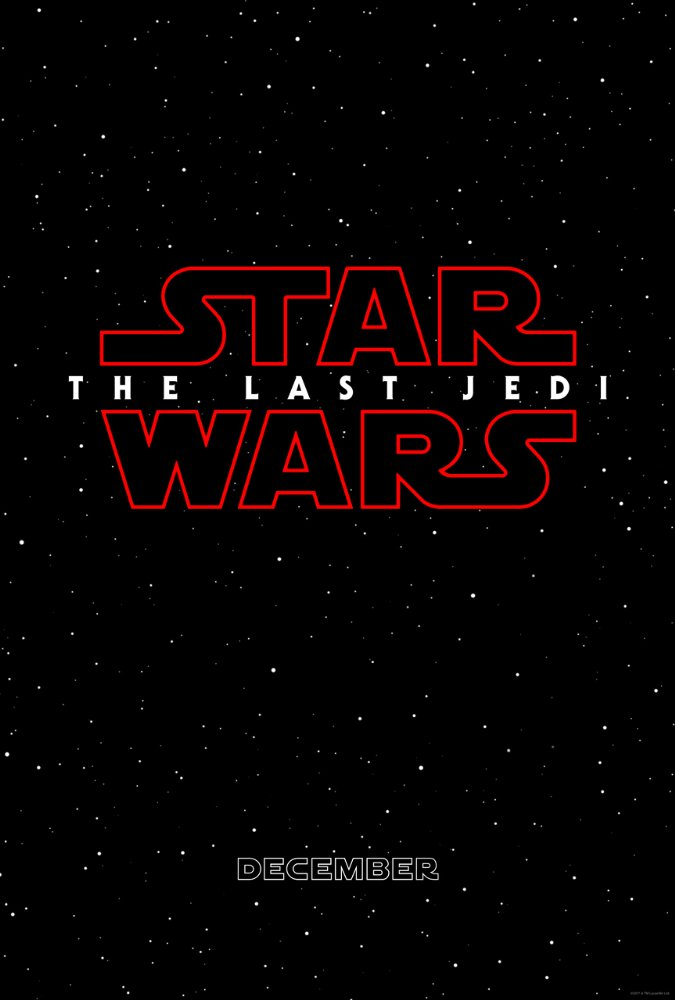
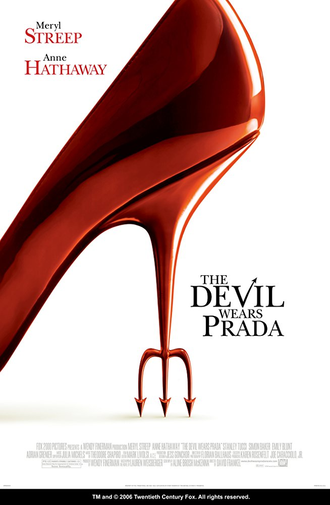
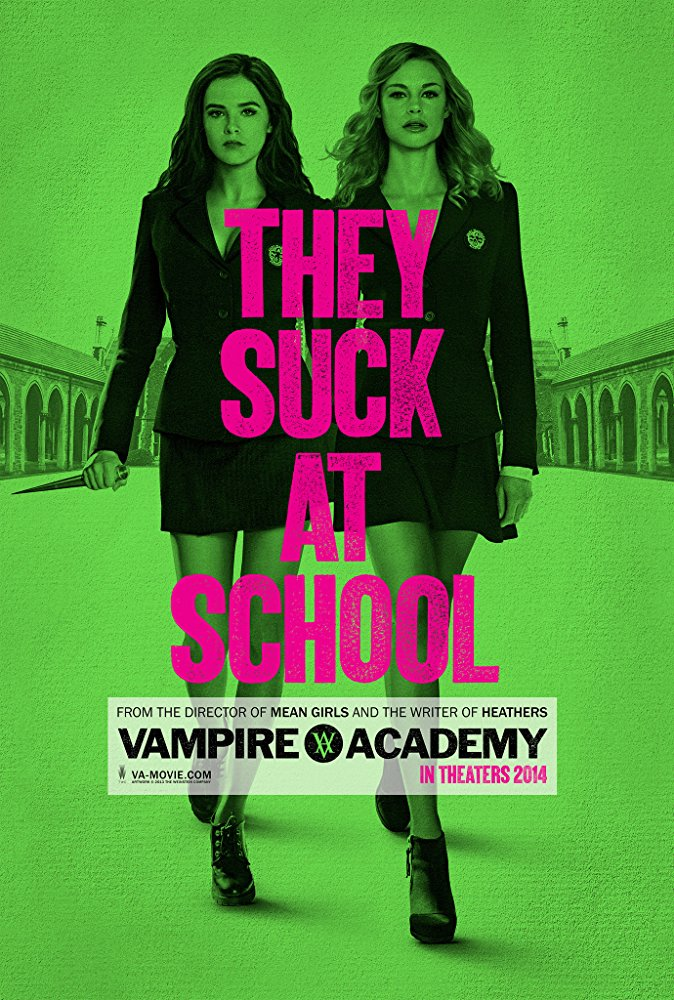
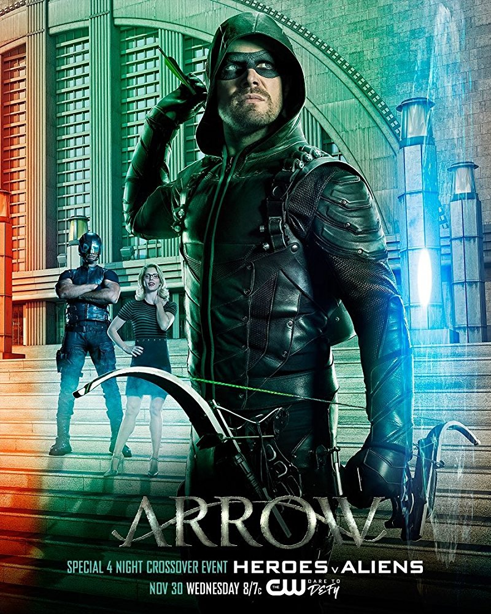

The Age of Adaline.
Genre: Drama, Fantasy, Romance.

Release date: 23 April 2015 (Russia).
A young woman, born at the turn of the 20th century, is rendered ageless after an accident. After many solitary years, she meets a man who complicates the eternal life she has settled into.
Star Wars: The Last Jedi.
Genre: Action, Adventure, Fantasy.
Release date: 14 December 2017 (Russia).
Having taken her first steps into the larger Jedi world, Rey joins Luke Skywalker on an adventure with Leia, Finn and Poe that unlocks mysteries of the Force and secrets of the past.
The Devil Wears Prada.
Genre: Comedy, Drama.
Release date: 5 October 2006 (Russia).
A smart but sensible new graduate lands a job as an assistant to Miranda Priestly, the demanding editor-in-chief of a high fashion magazine.
Vampire Academy.
Genre: Action, Comedy, Fantasy.
Release date: 27 February 2014.
Rose Hathaway is a Dhampir, half human-half vampire, a guardian of the Moroi, peaceful, mortal vampires living discreetly within our world. Her calling is to protect the Moroi from bloodthirsty, immortal Vampires, the Strigoi.
The Avengers.
Genre: Action, Adventure.

Release date:3 May 2012 (Russia).
Earth's mightiest heroes must come together and learn to fight as a team if they are going to stop the mischievous Loki and his alien army from enslaving humanity.
The Flash.
Genre:Action, Adventure, Drama.

Release date: TV Series (2014– ).
After being struck by lightning, Barry Allen wakes up from his coma to discover he's been given the power of super speed, becoming the Flash, fighting crime in Central City.
Arrow.
Genre: Action, Adventure, Crime.
Release date: TV Series (2012– ).
Spoiled billionaire playboy Oliver Queen is missing and presumed dead when his yacht is lost at sea. He returns five years later a changed man, determined to clean up the city as a hooded vigilante armed with a bow.